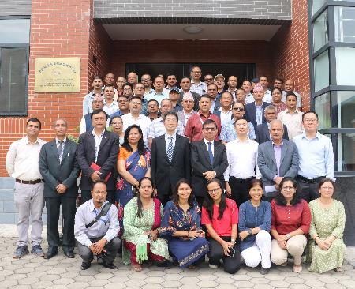

KATHMANDU, Sept. 5
(Xinhua) -- A training program has started in Kathmandu Center for Research and Education (KCRE) to help
young Nepali researchers improve their data analysis and scientific paper writing, a move which is believed
to contribute to an in-depth research on climate change in South Asia.
Some 30 early-career researchers, mostly from Tribhuvan University, will take part in the seven-day training
course supported by the Kathmandu Center for Research and Education, which was established by the Chinese
Academy of Sciences inside the university, and the Alliance of International Science Organizations (ANSO).
The training program is aiding Tribhuvan University's efforts to build a research university and boost its
capacity in the area of research, said Dharma Kanta Baskota, the university's vice-chancellor.
As the majority of the people in South Asia depend on agriculture for their livelihood and the effect of climate
change is severe in the agricultural sector, in-depth research on climate change, its impact and the adaptation
strategies is needed, Baskota said while addressing the inauguration ceremony of the training program on
Tuesday.
The training program is part of a research project being funded by the ANSO, a non-profit, non-governmental
international scientific organization founded in 2018 by the Chinese Academy of Sciences and 36 other
international science and education institutions from around the world.
The research project focuses on analyzing the climate change trend, livelihood situation and the adaptive
capacity to combat climate change in South Asia.
As China has made notable progress in technological achievements in recent years, there is a broader prospect of
exchanges and cooperation in scientific research between the two countries, thus providing driving forces for
bilateral relations and common development, said Wang Xin, a counselor at the Chinese Embassy in Nepal. Enditem

group photo
https://xhnewsapi.xinhuaxmt.com/share/news_pc?id=863132960423936&showType=3001&utdId=0c305b081f104694b58006315bc14462&version=3.1.4